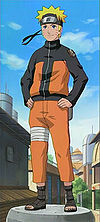
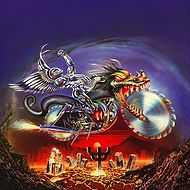
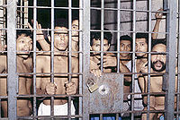

Supongo que por estar en esta guia debes ser un novato, a diferencia de los noobs, los novatos pueden ser valiosos dependiendo de como actuen durante sus primeros dias (las mujeres comprenderan) asi que debes leer esta guia y de ahora en adelante bota la Biblia a la basura y tu absurda música tambien, solo haras lo que dice este libro, comeras con el, te bañaras con el, pero por lo que mas quieras no haras eso con el, Entendido?
Ahora lo primero que haremos es ir por pasos, pues los novatos tienen diferentes situaciones dependiendo de donde ellos estén y a diferencia de los noobs, los novatos son muy frecuentes en la vida real:
En el Ejercito
-Dije descremado con crema!!!-Pero eso no tiene logica-No me importa!
Entrenamiento
- Olvídate de los rangos militares entendido!!, de ahora en adelante el sargento solo es quien alquila los servicios de tu nuevo jefe que en la mayoria de los casos es el Chico Rico que tiene un par de guardaespaldas muy peludos y grandes
- No te servirá ser uno de lo que mas protestaba en marchas Ponkys y manda al demonio el discurso de que te infiltras en el sistema para derribarlo porque sabes que es mentira y si insistes con eso sufrirás mucho por el día (y no quiero hablar de la noche)
- De ahora en adelante la manera mas efectiva de lavar el baño es con un cepillo de dientes a menos que tu superior diga otra cosa, ni siquiera el tecno-trapeador que venden en los infomerciales es mas efectivo que tu cepillo de dientes quedo claro?
- A nadie le importa que la capacidad de resistencia humana solo alcance para 10 vueltas, si te ordenan correr alrededor de la pista durante 2371 vueltas lo harás sin parar y sin pedir Hagua, durante ese instante eres un Cyborg y los Cyborg no se quejan, solo dan vueltas hasta que su programa de Haserfroch les indique lo contrario
Como Soldado
- El novato casi siempre es usado como objeto de bromas, no hables de la teoria de las armas y el combate porque te saldran con un discurso sobre la experiencia y para que sirve la experiencia y finalmente porque moriras en esa misión , por cierto, si alguien te muestra una foto de su familia ten por seguro que morirá en batalla, asi que lo mejor que puedes hacer por el es ir planeando su funeral y de paso ves si tiene una linda esposa
- Tu Oficial superior te dirá que sirvas como escudo humano mientras toman café y hablan con su agencia de viajes, lo mejor que puedes hacer es decirle al enemigo donde se esconden ellos para que ellos sean quienes mueran, no tu, luego vengaras a tu peloton
- Los extraterrestres van a por el novato, si quieres vivir debes actuar como si fueras el veterano y comenzar tu actuación estelar como Rambo, pero en todo caso se notara un poco que eres nuevo, lo recomendado por el Dr.House Es que te escondas
En Una Tribu Urbana
 El fue novato en esto de ser estrella de TV
 La primera parte de ser jebi es identificarlo ¿sabes quien es?
- Dejemoslo planteado de la siguiente manera, eres un pinche posero y por ello debes informarte de la tribu urbana a la que vas a entrar o moriras, por ello siempre debes tener presente que las cosas varian de cultura en cultura
- Si vas a ser Cani, Ñero, Flaite, Naco o como pinches se diga has caso omiso de lo anterior, es mas, en lo posible muestra poca inteligencia y di que Megadeth es una banda de Emo-Punk (Si dices eso en una reunion de Jebis es el equivalente al suicidio)
- Si vas a ser emo consume en los primeros dias mucho Hierro mientras tu cuerpo se adapta a ciertas funcionalidades del aparato circulatorio Emo, practica para cortarte las venas con un cuchillo de mantequilla y usa mucho desmanchador porque mientras no tengas funcionalidades emo salpicaras sangre por todos lados.
- Si vas a entrar a una secta Otaku no digas que Naruto o One Piece son los mejores animes, primero porque hay mejores en la escala otaku y segundo porque ellos prefieren el manga.(Pero Naruto hace llorar a un Cani, lo he visto muchas veces) toma algunas clases de japones porque si no lo haces no podrás comunicarte con tus
extraños y pervertidos amigos, ve recitando cada uno de los generos del manga o anime (Shonen, Shojo, Ecchi, Yuri, Yaoi, Hentai, Lolicon, , ズセゼソゾタ)
- Si vas a entrar al gran mundo de los Jebis comienza escuchando a Pastor of muppets y Besitos, pero no te quedes con ellos nada mas porque podrían crucificarte por Poser (Algo del estilo Judas Priest y IciDizi sirve como segundo paso)
- En el caso de los Punk hay una regla de oro, nunca, NUNCA!! los confundas con los emos porque
son muy parecidos los punk odian a muerte a los emos y tampoco nombres a My Chemical Romance en frente de ellos, so riesgo de muerte
En instituciones educativas o universidades
 Por nada del mundo hagas que te castiguen
- Si eres de los que entra junto con una generación de tontos te vamos a decir 2 cosas, Primero nunca vayas con tu mama o pasaras por una vergüenza tan grande que tendrias que comprar un avion a transilvania para huir, Segundo Cuidado con los grados superiores.
Vienes solito? entonces tendrás que identificar los grupos de personas que representan un riesgo potencial para tu supervivencia en la escuela, porque digo supervivencia? porque en algunos casos la gente se acompleja tanto que se suicida:
- Las chicas que andan en grupos de a 3, Si son buenas a veces te puedes sentir mal con ella, si son malas son de esas chicas que llevan un letrero de COMEME en la cara y hablan mal de tus compañeros y de ti en un codigo que solo ellas entienden
- Los Bravucones que se burlan de ti o te golpean
- El chico pervertido que te enseñara mas sobre ciertas cosas y el sexo opuesto que un libro de anatomía y una película pron combinadas
- El amante sensible de la música al que todos molestan porque es diferente, puede que en uno de tus arranques de ira te mate (también puede ir a sitios cool como Ibiza y santa marta y solo te traerá de recuerdo la pinche comida del avión)
Extra:Las chicas pueden parecer unas santurronas pero cuando estas solo con su grupo sabrás que son tan pervertidas normales como cualquier otro y por cierto, las chicas que se caen, desmayan o tropieza mucho pueden ser muy agradables
- En la universidad te darás cuenta que tantos años de esfuerzo en el pinche colegio no sirven para nada, primero date cuenta de que si andas con cosas del colegio afuera te dirán looser y vividor del pasado, en las clases no anotes como si te fueran a calificar los apuntes y disimula lo mas posible tu estado de novato, no te unas a sectas de Farsarquisrtas que solo plantean lavar tu cerebro para convertirte en un Gomelo o Pijo o como sea que se diga, y en el primer semestre no vayas en auto si no lo quieres ver hecho trizas.
Al interior de la santa madre Frikipedia

Jamas, Jamas esperes que el ponga la cara por ti
- Como te darás cuenta al comenzar, tus artículos irán siendo borrados por tipos con nombres como Chapapotey o El inquisidor ellos son los mas poderosos usuarios de la frikipedia conocidos como Administradores, Si quieres evitar los problemas con ellos, dales Scooby-Galletas
- Usa algunas plantillas para indicar que eres un
noob inutil recien comenzado, pues La inquisición hara todo lo posible por bannear a todos los que les arruinen el negocio, digo no hagan las cosas bien
- Habrán algunos señores amables conocidos como los frikipedistas senior, los cuales te ayudaran de buena gana porque aun no tienen tantas responsabilidades como los Administradores
- Hay un par de innombrables en la frikipedia, que por obvias razones no puedo nombrar y lord voldemort acá no es innombrable, es pendejo
- Leerte las ayudas que hay en la portada te ayudara a quitarle el trabajo a los administradores, pero a nadie le interesan ellos, así que lo unico util que puedes hacer es procurar que no te baneen por pendejo y/o estupido
- Entra a los portales para ver cuales son los temas que te convienen mas, habla con el encargado, luego lo golpeas y te quedas con el portal Muahahahaha!!!.
En un Foro
Comienza dando un mensaje que casi de seguro nadie en foro leerá o le prestara atención, sigue dejando mensajes hasta que les saques la piedra a los moderadores del foro y te digan algo como lo siguiente:"Ya deja de ser tan noob, estupid@!!!" luego te pones serio y dejas cosas que si son importantes a la que la gente contestara bien, no hables en HOYGAN porque eso seria gritar con horrores de ortografía, como ultimo paso abres hilos o temas de conversación que sean interesantes para todo el mundo y el universo y si ves a un moderador de un foro en la vida real robale su contraseña y luego los banneas a todos de por vida.

La principal politica de Facebook
- Aprende a leer captchas porque los necesitaras hasta que tengas mas de 56.23 amigos, usa un libro de traduccion o algo asi, por fortuna, los captchas de facebook son mucho mas faciles que los de Google y sus productos
- No te unas a grupos que muestren tus aficiones mas bizarras como: "Yo tambien me orino en la ducha" o "Viva la inciclopedia" la gente que ve que eres fan de esas porquerías casi con total seguridad te evitaran y te darán un golpe en la cara
- Unete a paginas mas graciosas como :"Podría este plátano conseguir mas fans que los Jonas Brothers?" o "En honor a la botella que golpeo en la cara a Justin Bievber-Bobo"
- En esos malditos juegos de facebook te hacen comprar cosas para que puedas pasar, es mas facil pedirle
limosna regalos a tus grandes amigos pero no te excedas o ellos te eliminaran te sus amistades por pendejo
- Pon una imagen primero y solo si te lo piden pon una foto
 De: La Frikipedia, la enciclopedia extremadamente seria.
De: La Frikipedia, la enciclopedia extremadamente seria.